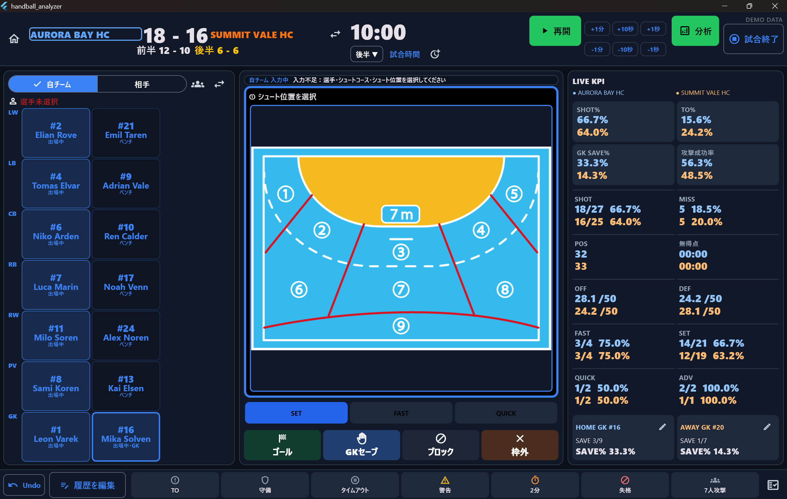

SPORTS · DATA · SOFTWARE
Turn records into
understanding.
nunoken builds sports analysis software that helps coaches and analysts make better decisions during and after the game.
Explore Handball AnalyzerLIVE MATCHRECORDING
HOME28
2ND24:16
AWAY25
SHOT %64.2%
FASTBREAK08GOALS
GK SAVE37.5%
01 / APPROACH
See the meaning
behind the numbers.
Turn every event in a match into information for review and the next decision—without adding unnecessary complexity to the recording workflow.
CURRENT PRODUCT
Handball Analyzer
A Windows app for recording handball matches and analyzing teams, players and goalkeepers in real time. Version 1.1 supports Japanese and English.
Record the match.
Analyze it live.
- REAL-TIME
- TEAM REPORT
- CAREER REPORT
- JAPANESE / ENGLISH

ACTUAL PRODUCT SCREEN · MATCH RECORDING